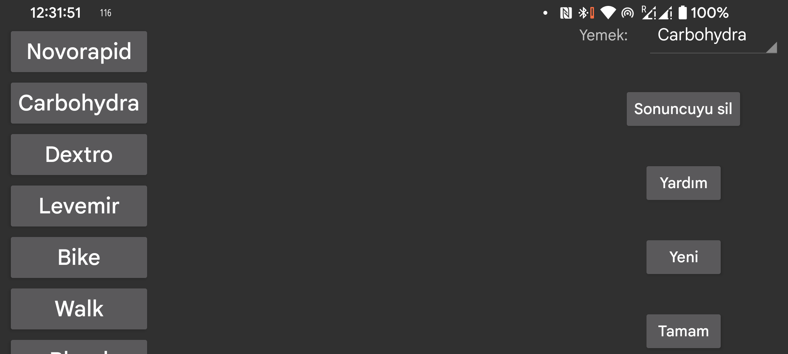

ar be de es fr hi it nl pl pt ru tr uk uz zh en
Buradan oluşturabilirsiniz, İnsülin, karbonhidrat veya fiziksel aktiviteyi belirtirken grafiğe eklenen miktarlar için etiketleri silip değiştirebilirsiniz. Zaten bazı miktarları kaydettiyseniz, konumlarına karşılık gelen etiketi alacaklardır. Yani ikinci konuma başka bir ad verirseniz, ikinci konumda daha önce bir adla belirtilen kaydedilmiş miktarlar o adı alacaktır.
Bir etiketi değiştirmek için o etikete dokunun.
Yemekten sonra öğünlerin karbonhidrat içeriğini ifade eden etiketi seçebilirsiniz. Orta Sol Menü > Yeni miktar daki etiket için, içeriklerinden bir öğün belirleyebileceğiniz bir Yemek düğmesi eklenir. Karbonhidrat toplamı daha sonra bu etiket altında kaydedilir ve kaydedilmiş bir değerin öğününü seçerek bu öğünü görüntüleyebilirsiniz.